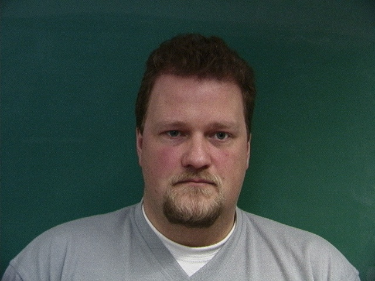
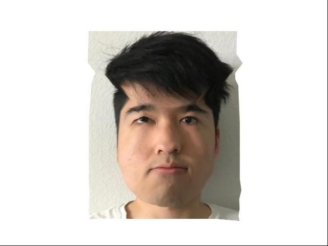

Face Morphing
CS194-26 Proj #3 : Face Morphing, Ken Guan
Do you know that a smooth face morphing video requires no complicated technique to make but a sequence of linear transformations? This project demonstrates just that. Don't overpay for fancy softwares again! Each section below corresponds to a task in the original project (linked above).
The morph video from one face to another is really a sequence of images, each morphed at a certain ratio. At each ratio, we find the correspondingly weighted average of pre-defined matching feature points as our base shape, and warp each image into it. During the warping process, we split the image into triangles formed by the feature points, and linearly transform each triangle into the warped shape.
You can see that our hair styles are quite different, so the transition there is more of a fade-out than a morph.
Here is the full morph video!
https://youtu.be/CSMa5ikqa2Y
I used the Danish face database and picked only the full frontal faces with neutral expression. I calculated their average shape and warped all faces into it. Here are the results:





Top is the mean face. Rest are some examples of warped faces. We can see that there are a decent amount of variances in the faces, and each face looks changed quite a bit.
Things got weirder when my face is warped to the mean. I don't think I'll blend into Danish people well after all.
Me into the Danish mean
Danish mean into me
Me more Danish

Me less Danish
A video of me and my fellows!
https://youtu.be/O3vouduLS3w